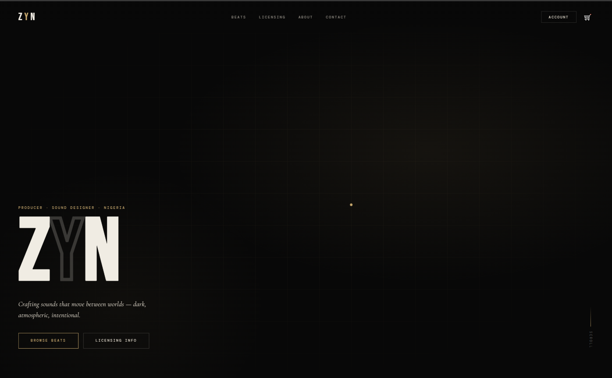
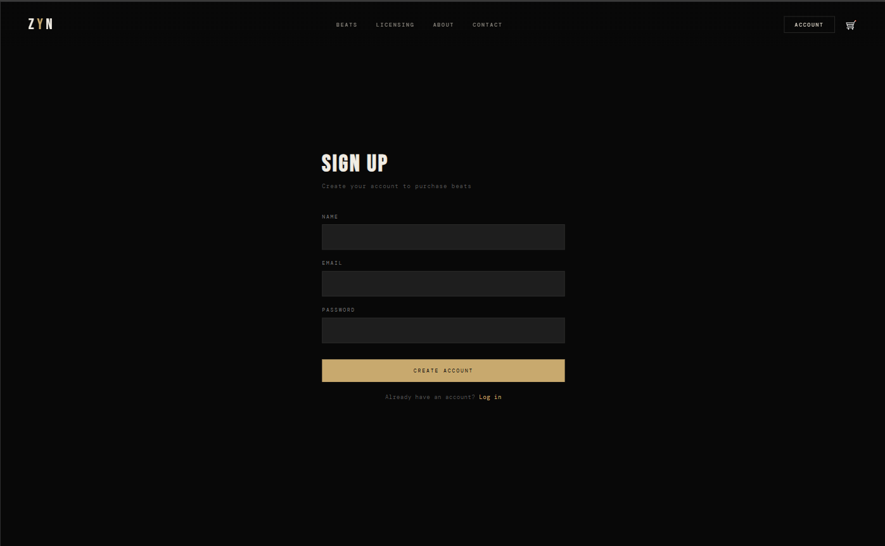
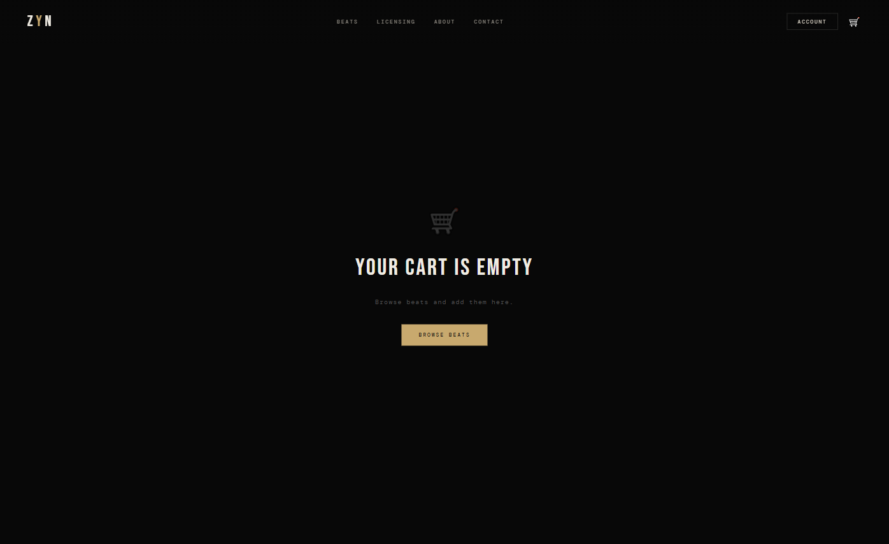

Zyn Beats
Beat store and e-commerce platform
I'm a music producer. I needed a professional storefront to sell my beats and licenses online, so I built one. Zyn Beats is a full e-commerce platform with tiered licensing, secure payment processing, automated order emails, and an admin dashboard to manage everything, built entirely by me, for my own production brand.
Most beat stores are built on third-party platforms that take a cut of every sale, limit how you present your brand, and give you no control over the buyer experience. I wanted full ownership of the storefront, the checkout flow, the licensing logic, and the data.
Building it myself meant I could design it exactly for how producers actually sell: tiered licenses with different usage rights, a cart that persists across devices, instant order confirmation emails, and an admin dashboard where I can manage the whole catalog without touching code every time I drop a new beat.



Tiered licensing system
Basic Lease, Streaming Lease, and Exclusive Rights — each with different pricing and usage terms, selectable per beat at checkout.
Secure checkout via Paystack
Full payment gateway integration including transaction verification and webhook handling for reliable order confirmation.
Automated order emails
Transactional email pipeline via Resend — buyers receive instant order confirmation with license details immediately after purchase.
Admin dashboard
A full internal tool for managing the beat catalog, orders, and licenses — no code needed to add new beats or update pricing.
Cross-device cart persistence
Cart state syncs via Supabase so buyers can browse on mobile, return on desktop, and pick up exactly where they left off.
Beat catalog with filtering
Buyers filter by genre, mood, and BPM. Built to scale as the catalog grows without any changes to the frontend filter logic.
The most interesting part of this project wasn't the e-commerce logic — it was the perspective shift that comes from being both the developer and the actual user. Every friction point I hit as a producer using other platforms became a feature I built into this one. That feedback loop — building for yourself — produces software that works differently from software built for an abstract user.